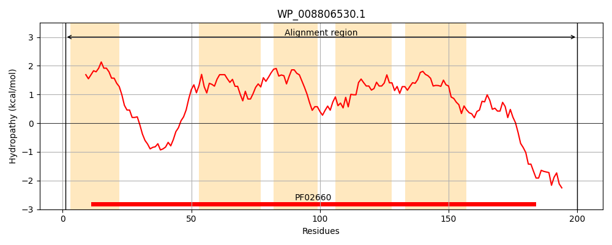
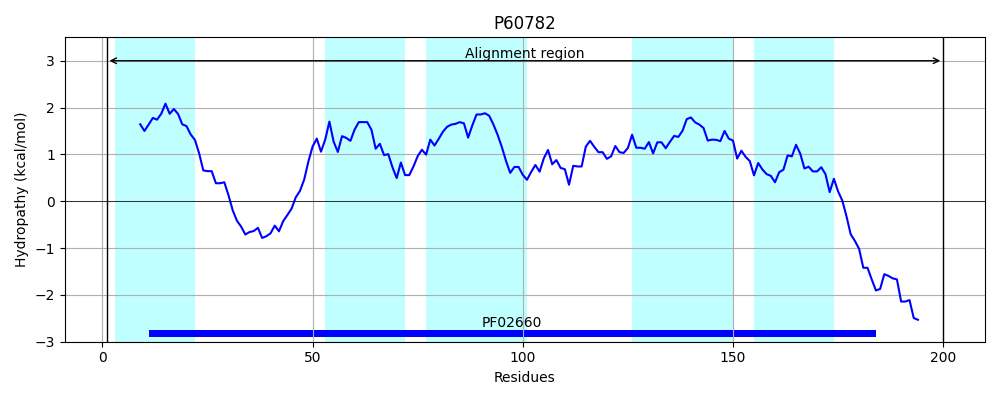
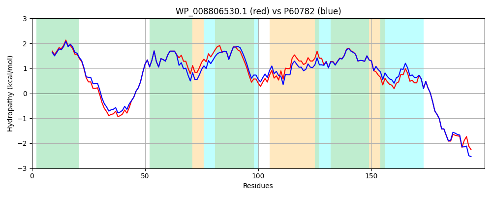

Hit Accession: P60782
Hit TCID: 9.B.31.1.1
Hit Description: gnl|BL_ORD_ID|11131 gnl|TC-DB|P60782|9.B.31.1.1 UPF0078 membrane protein ygiH - Escherichia coli.
Mach Len: 200
e:0.000000
Query TMS Count : 5
Hit TMS Count: 5
TMS-Overlap Score: 4.150000
Predicted Substrates:CHEBI:10648;sn-glycerol 3-phosphate
BLAST Alignment:
Score: 977 , Bit scores: 380 bits, E-value: 7.3e-137, Alignment length: 200, Percentage identity: 90
Query: 1 MSAIAPGLVLLAYLCGSISSAILVCRLAGLPDPRDSGSGNPGATNVLRIGGKGAAVAVLIFDVLKGMLPVWGAWALGLTPFWLGLVAIAACVGHIWPVFFHFRGGKGVATAFGAIAPIGLDLTGVMAGTWLLTILLSGYSSLGAIVSALIAPFYVWWFKPQYTFPVSMLSCLILLRHHDNIQRLWRRQESKIWTRMKKKK 200
MSAIAPG++L+AYLCGSISSAILVCRL GLPDPR SGSGNPGATNVLRIGGKGAAVAVLIFDVLKGMLPVWGA+ LG++PFWLGL+AIAAC+GHIWPVFF F+GGKGVATAFGAIAPIG DLTGVMAGTWLLT+LLSGYSSLGAIVSALIAPFYVWWFKPQ+TFPVSMLSCLILLRHHDNIQRLWRRQE+KIWT+ K+K+
Sbjct: 1 MSAIAPGMILIAYLCGSISSAILVCRLCGLPDPRTSGSGNPGATNVLRIGGKGAAVAVLIFDVLKGMLPVWGAYELGVSPFWLGLIAIAACLGHIWPVFFGFKGGKGVATAFGAIAPIGWDLTGVMAGTWLLTVLLSGYSSLGAIVSALIAPFYVWWFKPQFTFPVSMLSCLILLRHHDNIQRLWRRQETKIWTKFKRKR 200 | Protein Hydropathy Plots: |
|---|
|  |  |
Pairwise Alignment-Hydropathy Plot:
|
|---|
|  |